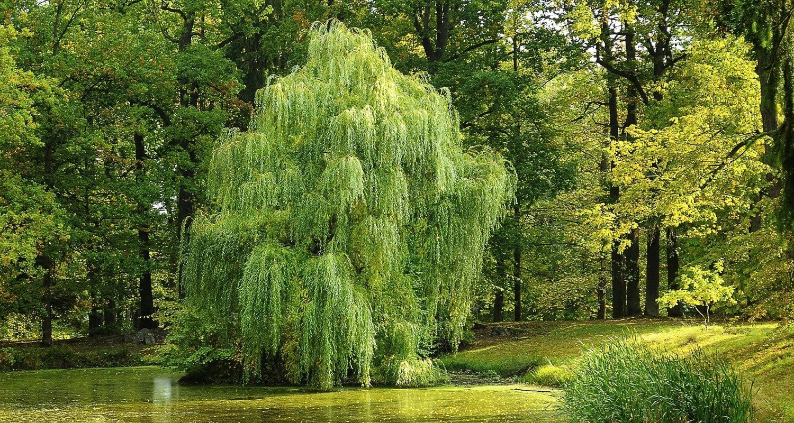
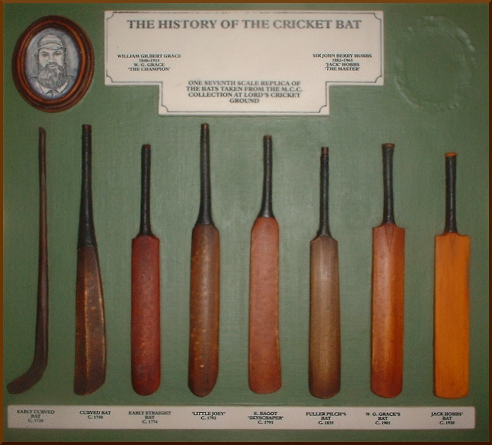
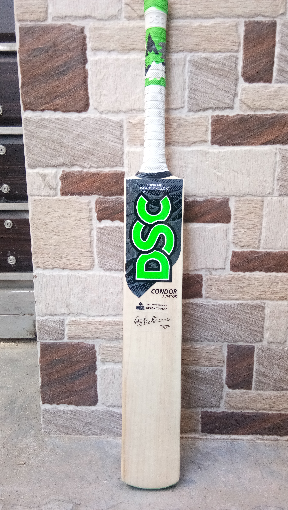

The Most Expensive Weapon in Sports
If you walk into a premium sports store today and ask for the exact same bat model used by Virat Kohli, Rohit Sharma, or Joe Root, be prepared to hand over anywhere between ₹80,000 to ₹1,20,000 (roughly $1,000 to $1,500). To the untrained eye, it is just a piece of carved wood with a rubber grip. Why on earth does it cost as much as a high-end laptop or a secondhand car?
The answer lies in a highly secretive, incredibly meticulous manufacturing process that blends centuries-old carpentry traditions with modern biomechanical engineering. Making a cricket bat for an international player isn't factory assembly; it is bespoke tailoring where a millimeter of misplaced wood can be the difference between a World Cup-winning six and being caught at the boundary.
The English Willow Monopoly

The journey of a ₹1 Lakh bat begins in a muddy field in the United Kingdom, specifically in areas like Essex. International bats are made almost exclusively from Salix Alba Caerulea, commonly known as English Willow. But you can't just chop down a tree and carve a bat.
This specific species of willow possesses a magical combination of properties: it is tough enough to withstand the impact of a leather ball traveling at 150 kmph, yet soft and fibrous enough to act like a trampoline, absorbing the impact and propelling the ball forward. It takes roughly 15 to 20 years for a willow tree to grow to a harvestable size. The climate in England provides the perfect ratio of moisture and temperature to ensure the wood fibers grow straight and true.
Unlike Kashmir willow, which is much denser and heavier, English willow offers explosive power without the dead weight. Because the supply is naturally limited by the slow growth cycle of the trees, the raw cleft of premium wood alone is incredibly expensive before it even reaches a bat maker.
The Secret Grading System
Not all English willow is created equal. When the logs are chopped into blocks (called clefts), they are sorted into a strict grading system.
Grade 4 and 3: These have irregular grain patterns, blemishes, and butterfly marks. They are perfectly fine for club cricket and retail between ₹10,000 to ₹30,000.
Grade 2: Straighter grains, fewer blemishes. Good for serious amateur cricketers.
Grade 1: The premium retail stuff. Very clean wood, straight grains.
Player Grade (Grade 1+): This is the holy grail. Less than 2% of all willow harvested makes this cut. It has absolutely zero blemishes, perfect two-tone color, and usually features 10 to 14 perfectly straight, equidistant vertical grains across the face. These clefts are kept in a literal vault by manufacturers and are reserved exclusively for international stars. This is what you are paying ₹1 Lakh for.
Customization: Why Kohli's Bat is Different from Dhoni's

When a bat maker crafts a weapon for a player like Virat Kohli, they don't just pull one off a shelf. The bat is engineered to complement the player's specific biomechanics.
The Sweet Spot Engineering:
MS Dhoni, famously known for his helicopter shot and his ability to dig out yorkers in the death overs, used bats with a low sweet spot. The bulk of the wood (the "profile") was concentrated right at the bottom of the bat. This made the bat bottom-heavy but generated terrifying momentum for his bottom-handed shots.
Virat Kohli, who relies heavily on timing, cover drives, and back-foot punches, prefers a mid sweet spot. The wood is distributed evenly in the center, giving the bat an incredibly light "pick-up" so he can maneuver it quickly against express pace.
Players like Rohit Sharma, who love playing the pull shot on bouncy pitches, often opt for bats with a slightly higher sweet spot to connect cleanly with balls bouncing chest-high.
The Pressing Process: The Maker's Secret Sauce
If there is one aspect of bat making that is guarded like a state secret, it is the pressing process. Raw willow is soft. If you hit it with a cricket ball, the wood will dent massively. To fix this, bat makers pass the blade through a mechanical press applying up to 2 tons of pressure per square inch.
This compresses the fibers. Press it too much, and the bat becomes a solid plank of dead wood with no "ping" (the trampoline effect). Press it too little, and the bat will break in half during its first net session. The master bat maker relies on instinct, sound, and decades of experience to know exactly when the wood is perfectly pressed. The bats made for T20 cricket are often pressed slightly differently to ensure they ping beautifully from ball one, though they might not last as long as a traditional Test match bat.
The Myth of the Heavy Bat

In the 1990s, the myth was that a heavier bat meant bigger sixes. Sachin Tendulkar and Lance Klusener used absolute logs, weighing well over 3 pounds (nearly 1.5 kg). But modern physics and T20 cricket have debunked this.
Power in cricket comes from bat speed, not just bat weight (Force = Mass x Acceleration). Today, an international player’s bat typically weighs between 2.7 to 2.9 pounds. By using extremely high-grade, lightweight willow, modern players get the best of both worlds: massive edges (up to 40mm thick) that provide the mass, combined with a light overall weight that allows for blindingly fast bat speed to hit 150 kmph yorkers into the stands.
The Economics: Stickers vs. Wood
There is one final, cynical truth about the ₹1 Lakh bat. While the wood and craftsmanship are undoubtedly expensive, a huge portion of the retail cost goes toward the sticker on the front.
When you see Virat Kohli walking out with an MRF bat, MRF did not make that bat. MRF makes tires. The bat was likely handcrafted by a master bat maker at a specialized factory (like SS, SG, or Spartan) and then branded with the sponsor's sticker. Brands pay superstars astronomical sums (reportedly over ₹100 Crores for top players) just to place their logo on the willow.
When you buy that ₹1 Lakh bat from a retail store, you are paying for the 20-year-old English tree, the master craftsman's decades of experience, the perfect balance, and yes—a hefty premium to feel exactly like your hero when you step onto the pitch.
Frequently Asked Questions
What is the difference between English Willow and Kashmir Willow?
English Willow (Salix Alba Caerulea) is grown in a specific climate in England, making the wood lighter, softer, and more responsive (giving better "ping"). Kashmir willow is heavier and denser, which makes it highly durable but requires more physical power to hit the ball the same distance. It is generally cheaper.
How much does Virat Kohli's bat actually cost?
The physical wood and craftsmanship of a Player Grade bat used by Virat Kohli costs between ₹80,000 to ₹1,20,000. However, the MRF sticker on the bat earns him an endorsement deal worth over ₹100 Crores annually.
What do the "grains" on a cricket bat mean?
Grains are the vertical lines on the face of the bat representing the age of the tree. More grains (10-14) usually mean the wood is older and the bat will reach peak performance immediately, but it might break sooner. Fewer grains (5-8) mean the bat needs more knocking-in but will last much longer.
How heavy was Sachin Tendulkar's bat?
Sachin Tendulkar famously used one of the heaviest bats in international cricket, weighing around 3 pounds 2 ounces (approx. 1.41 kg). Most modern players prefer lighter bats between 2.7 to 2.10 pounds for faster swing speeds.
What is "knocking-in" and why is it necessary?
Knocking-in is the process of repeatedly striking the bat's face and edges with an old cricket ball or a wooden mallet before using it in a match. This compresses the fibers of the willow, preventing the bat from cracking or snapping when it faces a hard leather ball at high speeds.
Can players use bats made of carbon fiber or plastic?
No. The MCC Laws of Cricket (Law 5) strictly mandate that the blade of the bat must consist solely of wood. Australian fast bowler Dennis Lillee famously tried to use an aluminum bat in 1979, which caused a massive controversy and led to this strict wooden-only regulation.